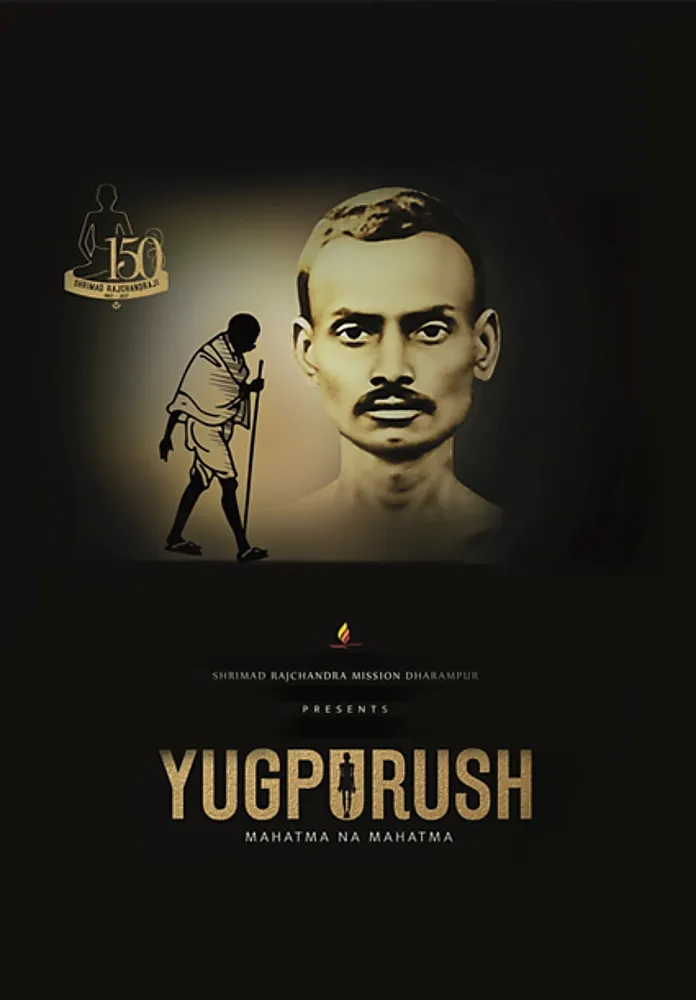

Darshan Heena Jagdish Mahajan
Founder — Artistic Humans • Theatre Practitioner • Social Entrepreneur
“Curiosity to Creation. Art to Public Value.”
The Human Behind Artistic Humans
For more than 15 years, Darshan has worked across writing, direction, acting, production, and cultural institution-building. What began as a vibrant college theatre movement grew into an expansive professional practice: creating original work, nurturing young talent, designing recurring platforms, and deploying the arts to advance education, civic awareness, and community wellbeing.
“Artist-led. Collaborative. Ambitious in scale. Grounded in the enduring conviction that creativity can generate opportunity — for artists, audiences, and entire communities.”
By 2019, Darshan had already accumulated extensive stage experience across Hindi and Gujarati theatre. Yet his vision was always broader than performing in conventional auditoriums: he envisioned art as an instrument of public participation, civic literacy, and institutional problem-solving.
Career Evolution
A journey of widening circles — expanding from stagecraft to multi-media production, civic missions, and lasting cultural institutions.
Foundation, College Theatre & National Honours
Started in college theatre at KESSC Institute, where he became the first student ever awarded the Principal’s Special Prize for his contribution to theatre and team leadership. Founded One Roof and created the seminal original play The Artist (as writer, director, and performer).
The Artist won at two National theatre festivals and received an international selection. Followed by prestigious honours including the Munshi Premchand Puraskar (Best Writer) and Sanjeev Kumar Puraskar (Best Actor) at P.L. Deshpande Festival, Best Writer & Outstanding Performer at Maharashtra Govt's Bhavai Theatre Festival, and an IPTA Certificate of Merit.
The Global Stage: Mahatma Gandhi in 'Yugpurush'
At the age of 21, Darshan was cast to portray Mahatma Gandhi in the acclaimed multilingual theatrical production Yugpurush – Mahatma Ke Mahatma / Mahatma Na Mahatma.
The production became one of the defining stage experiences of his early career, crossing 1,000+ performances internationally across India, the UK, USA, Africa, and Southeast Asia, performing before hundreds of thousands of spectators.

Multi-Media, Television & Cultural Platforms
Expanded into multi-discipline media leadership. Served as Executive Producer for Colors Gujarati's daily show Laxmi Sadev Mangalam (Osheen Entertainment). Acted in television series including Kano Banyo Common Man and Bha Se Bhade.
Assisted in direction and writing for the Gujarati feature film Bapu Kya Che, wrote crime episodes for VTV Gujarati, and wrote and performed stories for Akashvani All India Radio. Simultaneously served as Creative Head at Bodhitree Multimedia while founding Artistic Humans.
In January 2020, conceptualized and staged K Se Kalakaar at Poinsur Gymkhana — a 4-day festival presenting 5 original plays (Hamare Boss Babu, Yeh Hai Mumbai Meri Jaan, Atulya Bharat, Bhumika, and Kanchan Kachrewali), marking a shift towards building collective platforms. Won 3rd prize at Startup Weekend 2018.
Public Impact, Education & Global Recognition
Deepened civic and educational theatre. Conducted a five-month theatre engagement with tribal children in Gorai Village (Atharva Foundation) producing two plays. Launched "History Through Theatre" with We Can We Will Foundation, boosting communication skills and confidence in underserved students.
Directed the multi-award-winning play Bhumika: The Journey Within, winning 18 accolades across two National festivals and 4 State awards.
Created Pruthvi Che Shetkari — the World's first dance-drama on millets during the International Year of Millets 2023, earning a prestigious feature and recognition by the United Nations Food and Agriculture Organization (FAO).
Spearheaded Amrit Mahotsav 75×75×75: an audacious project staging 75 shows across 75 institutions in 75 locations in a single day on Shaheed Day (March 23, 2023), engaging over 1,000 students and 18,000+ audience members with the Government of Maharashtra.
Ecosystems, Constitutional Literacy & Cultural Leadership
Co-founded Sanskrutik Kala Manch in 2024 with Rohit Sharma and Poinsur Gymkhana. Over 2.5 years of unbroken monthly programming, the stage has hosted 600+ artists across 25 editions, creating a reliable artistic home for theatre, music, dance, and spoken word.
Conceived and spearheaded Rashtragranth — India's first mega-theatrical production based on the Constitution of India, assembling 40+ artists and technicians to bring constitutional literacy alive on stage.
Directed large-scale civic street theatre: 200+ street plays in Gadchiroli with Farmers for Forests reaching 33,000+ citizens on clean cookstoves; 61 street plays across 60+ villages with Global Vikas Trust supporting a 25-lakh tree plantation drive; and 30 shows on New Criminal Laws for the Maharashtra Home Department reaching 20,000+ citizens.
Beyond Theatre: Social Impact & Healthcare
Darshan’s work has extended far beyond cultural auditoriums into critical healthcare infrastructure and pandemic response:
Mission ICU
Serves on the core team of an initiative credited with helping install 200+ ICU beds across 22 government hospitals in 10 states, dramatically expanding critical-care capacity in underserved rural and semi-urban regions.
Corona Champions
Co-founded an initiative during the COVID-19 pandemic to document frontline worker stories, coordinate civic support, and promote public awareness and a culture of immediate community response.
“Across theatre, healthcare, and civic action, the common thread is identical: organize people, communicate with visceral clarity, and build institutional structures that empower communities to act.”
Appreciation & Recognition
Letters of commendation from the state's highest executive and legislative leadership acknowledging Darshan's dedication to using theatre for national and civic causes:

Government of Maharashtra

Member of Parliament (Mumbai North)
Building What Comes Next
The next chapter is far larger than an annual production calendar. It is about durable cultural infrastructure for India's next generation:
- CREATE World-class cultural institutions that provide training, research, and permanent creative stages.
- CONNECT Artists with institutional partners, policy makers, and wide public audiences across states and borders.
- CATALYSE Sustainable artistic livelihoods and high-impact social initiatives that turn creativity into public value.
Connect with Darshan
Available for artistic collaborations, keynote workshops, institutional theatre commissions, and cultural consultancy.